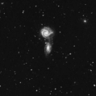
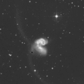
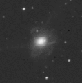
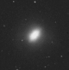
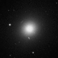
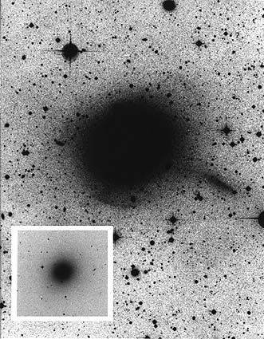

In the 1970s, Alar and Juri Toomre illustrated the merger process of spiral galaxies using images of nearby galaxies. This has become known as the ‘Toomre Sequence’.
|

NGC5426/5427
Credit: DSS |

NGC4038/4039
Credit: DSS |

NGC7252
Credit: DSS |

NGC3610
Credit: DSS |

M89
Credit: DSS |
| A Toomre Sequence illustrating the merger process. | ||||
In the first image of the Toomre sequence shown above, two galaxies (NGC5426/5427) approach each other for the first time. The following image (NGC4038/4039) shows the beginnings of the actual merger process, with the formation of long tidal tails. In the next image (NGC7252), the central merging is basically complete, but evidence for tidal tails and shells persist. As these slowly dissipate, the galaxy starts to resemble a normal elliptical galaxy (though with some evidence of disturbance ; NGC3610), until all that remains is a merger remnant (M89) which shows no outward sign of its violent origins.

Credit: David Malin
Individual galaxies are expected to pass through this sequence in approximately 500 million years. After this period of time, the outward signs of the merger will have faded, but techniques such as unsharp masking (made famous by David Malin) can still detect evidence for mergers. This image of the merger remnant, M89 (the final galaxy in the sequence above), has been subjected to unsharp masking (the original image is inset). This technique has brought a disrupted dwarf galaxy (middle right) and two shells (upper right and lower left) into sharp contrast, features which indicate that this galaxy has undergone a recent merger.